Película
Intocable2011
Drama · Comedia
Dónde verla
- Amazon Prime Video
- Acontra Plus
Tu cinéfilo de confianza
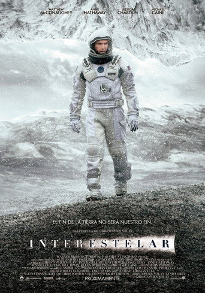
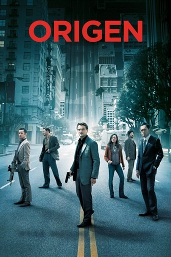
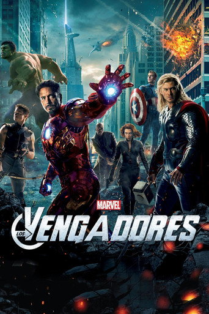
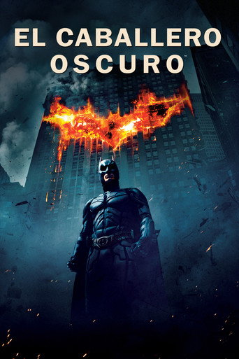
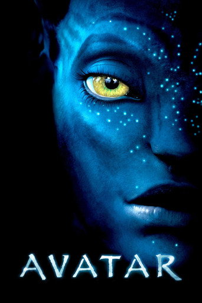
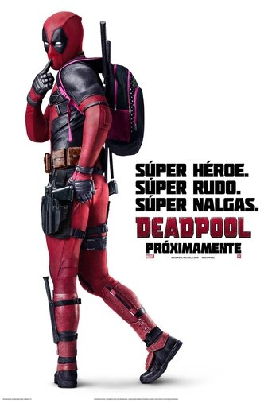
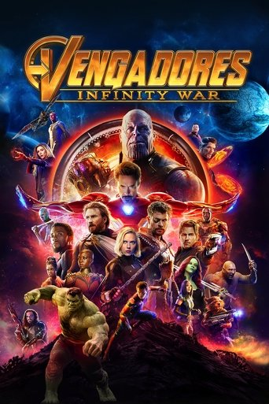
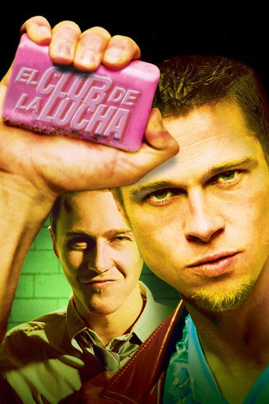
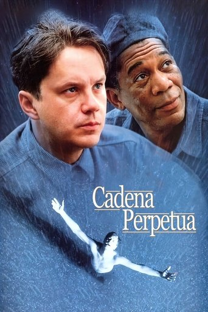
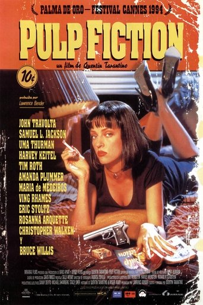
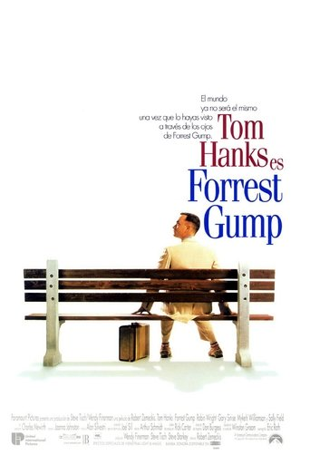
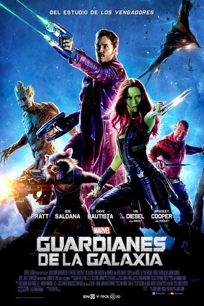
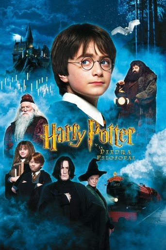
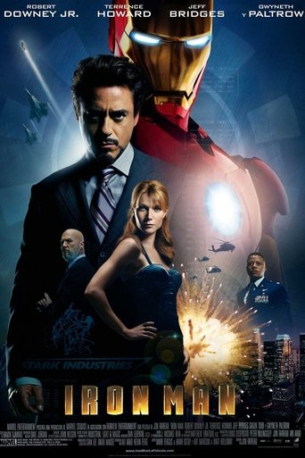
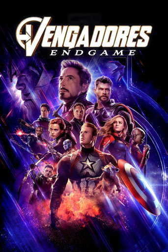
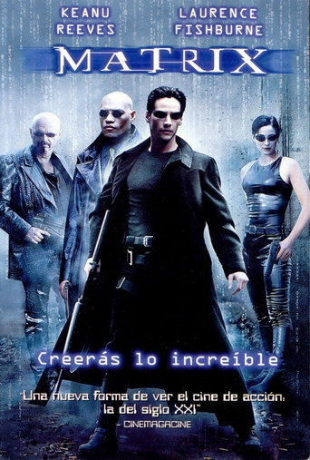
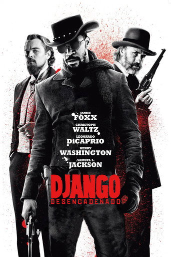
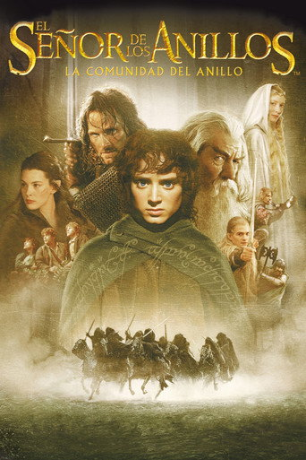
El catálogo
0
películas y series que conoce Umber, de las más conocidas a las que menos.
Acto I
Cuéntale cómo estás
Acto II
Te pregunta lo justo
Acto III
Te recomienda una
¿Otra?
Pídesela, y saca otra
Tú
Hoy no tengo el día y me apetece algo que abrace…
Umber
Pensando…
¿Te apetece algo que te acompañe en el bajón, o algo que te saque de él?
Tú
Que me saque de él.
Umber
Te propongo Intocable: una amistad improbable que te va a sacar más de una carcajada.
Película
Drama · Comedia
Dónde verla
Tú
Umber
Entonces, Pequeña Miss Sunshine: una familia de inadaptados, una furgoneta oxidada y tres días de viaje.
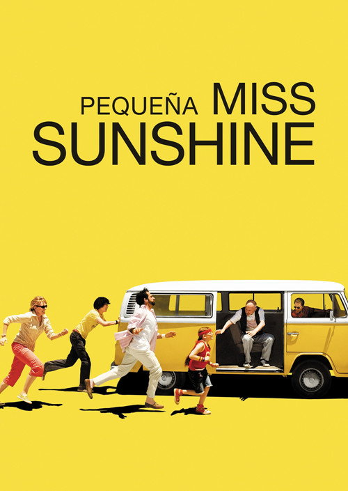
Película
Comedia · Drama
Dónde verla
El catálogo
Las películas y series que conoce Umber, de las más conocidas a las que menos. Si no sabes qué buscar, pregúntale a él.
16.035 títulos · página 1 de 446
Interestelar
2014 · Película
Origen
2010 · Película
Vengadores
2012 · Película
El caballero oscuro
2008 · Película
Avatar
2009 · Película
Deadpool
2016 · Película
Vengadores: Infinity War
2018 · Película
El club de la lucha
1999 · Película
Cadena perpetua
1994 · Película
Tiempos Violentos
1994 · Película
Forrest Gump
1994 · Película
Guardianes de la galaxia
2014 · Película
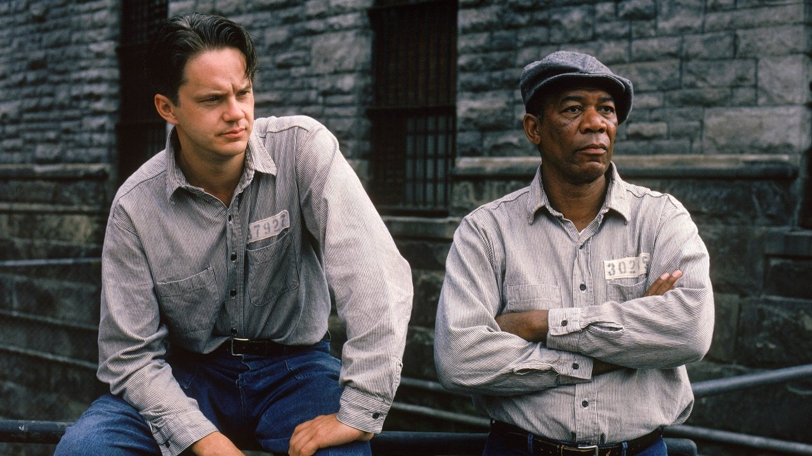
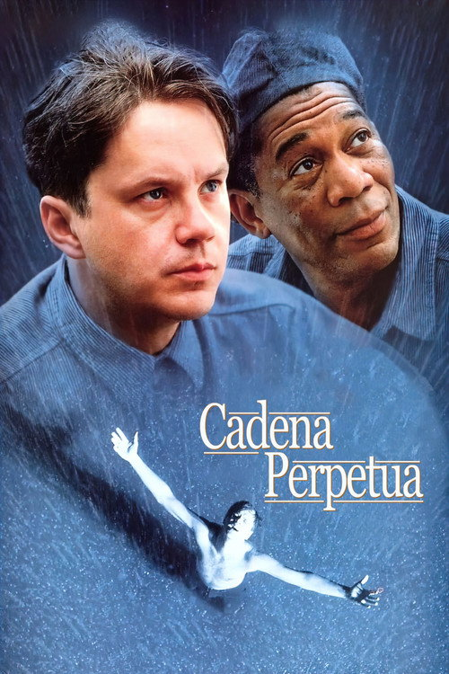
Película
The Shawshank Redemption
Acusado del asesinato de su mujer, Andrew Dufresne, tras ser condenado a cadena perpetua, es enviado a la prisión de Shawshank. Con el paso de los años conseguirá ganarse la confianza del director del centro y el respeto de sus compañeros presidiarios, especialmente de Red, el jefe de la mafia de los sobornos.
Dónde verla
Si te gusta esta
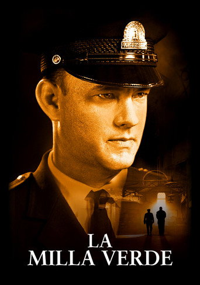
La milla verde
1999 · Película
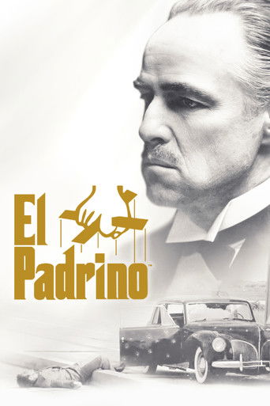
El padrino
1972 · Película
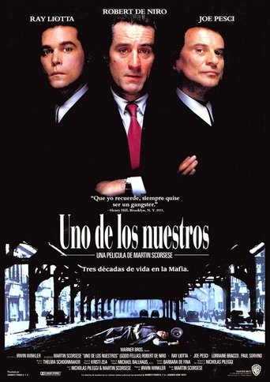
Uno de los nuestros
1990 · Película

Forrest Gump
1994 · Película
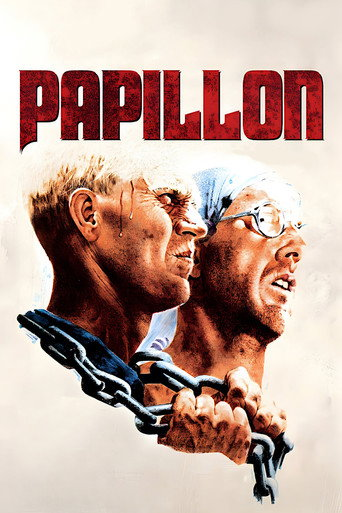
Papillón
1973 · Película
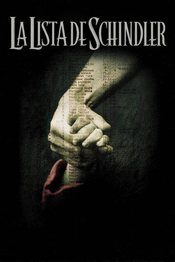
La lista de Schindler
1993 · Película
Especialidad Nuevo
Un Umber que solo recomienda cine y series de otoño: luz baja, lluvia, vuelta a las clases, cosechas. Y Halloween, cuando la película va de eso.
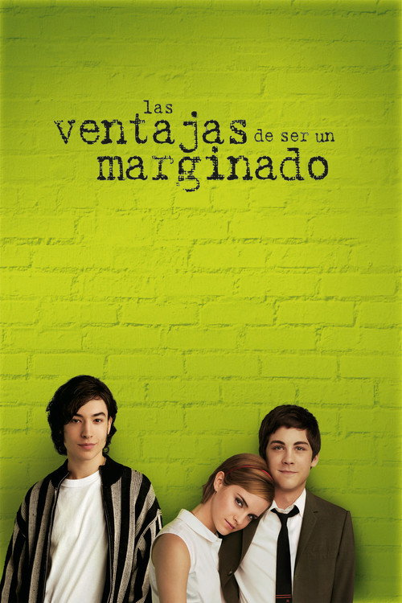
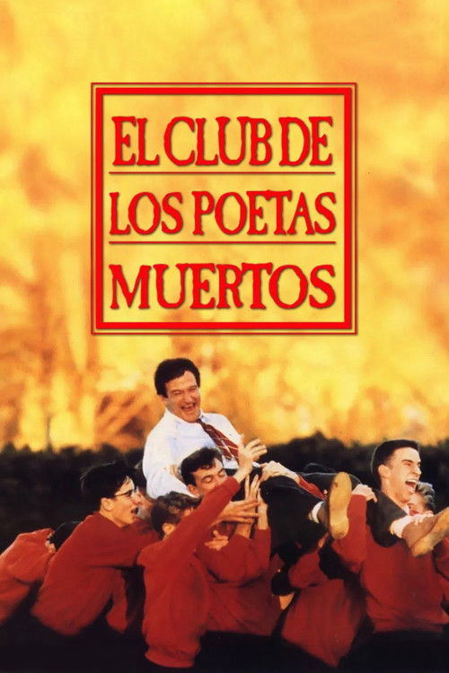
Juegos · N.º 3
Un cartel sin título y muy desenfocado. Con cada intento, o si pasas, se ve un poco más. Tienes seis.
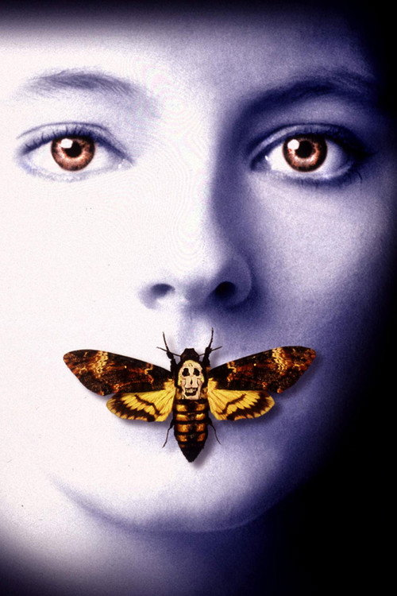
Intento 1 de 6Intento 2 de 6
Seven1995
El silencio de los corderos1991
Seven✕ No es esta
El silencio de los corderos✓ ¡Es esta!
¡Acertaste en el segundo!
Juegos · N.º 4
Elige cuatro letras, dos vocales como mucho, y mira dónde salen. Si no sacas el título, cada fallo trae una pista.
Elige 4 letras, 2 vocales como mucho
Programa
Tu cinéfilo de confianza
Con una cuenta gratis: dos recomendaciones al día.